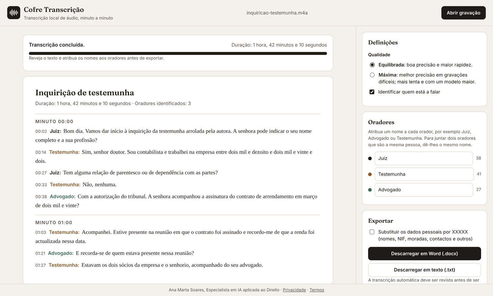

O que faz
A transcrição automática deve ser revista antes de ser utilizada, sobretudo nos nomes próprios, nos números e nos termos técnicos.
Como adquirir e começar a utilizar
130 €
Licença individual, em pagamento único.
- Envie mensagem a Ana Marta Soares no LinkedIn. Após o pagamento, recebe o código de licença, que começa por COFRE-.
- Abra o Cofre Transcrição no Google Chrome ou no Microsoft Edge e seleccione Instalar no computador.
- Cole o código de licença e seleccione Activar. A activação é feita uma única vez em cada computador.
- Abra a gravação. Na primeira utilização, o Cofre descarrega o modelo de transcrição, que fica guardado no computador.
Perguntas frequentes
Como transcrever a gravação de uma audiência?
Abre-se a gravação no Cofre Transcrição, que a transcreve no próprio computador, organizada por minutos e por oradores. No fim, atribui-se o nome a cada orador e descarrega-se a transcrição em Word.
A gravação é enviada para algum servidor?
Não. A transcrição decorre no computador do utilizador. A gravação não é transmitida, registada nem conservada.
Que formatos de ficheiro aceita?
Os formatos de áudio e de vídeo mais comuns, como MP3, M4A, WAV, OGG, AAC, FLAC, MP4, MOV e WEBM.
Quanto tempo demora a transcrição?
Depende do computador e da duração da gravação. Num computador recente com o Google Chrome ou o Microsoft Edge, a transcrição usa a placa gráfica e é mais rápida.
Quanto custa o Cofre Transcrição?
A licença individual custa 130 €, em pagamento único, e é adquirida a Ana Marta Soares. Após o pagamento, recebe o código de activação.